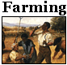

From Farm to Table
Today, we can just go to the grocery store. But for Washington, eating was never that easy. Sometimes his food had months of travel or years of waiting before it would be turned into a meal. Follow the some of the steps food took to go from the ground to the dinner plate!

 →
→